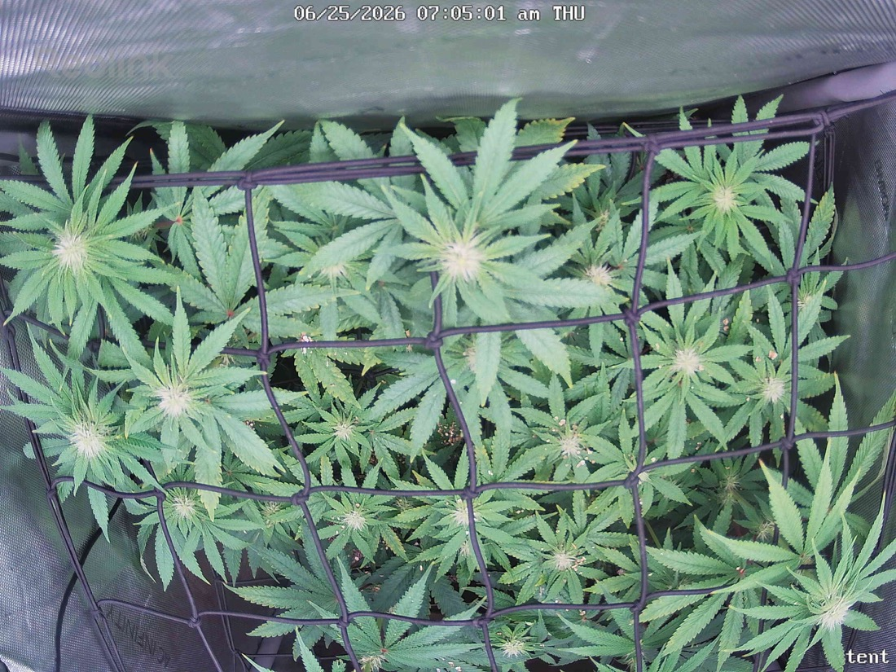

← All reports
Jun 25, 2026
Thu Jun 25, 2026 — 7:05 AM

Prognosis
Here's the 6/24 → 6/25 read:
- Most visible change: the second scrog net (installed 6/24) is now clearly seated across the canopy and colas are being tucked under/through it. Canopy looks flatter and more evenly leveled than 6/24 — exactly the SCROG effect you want this week.
- Growth: continued tightening of bud sites — multiple distinct colas with pistils and clustering visible across the whole net. Tops look slightly fatter / more sites filled in vs. yesterday. Normal day-over-day for early flower.
- Color: uniform deep green across the canopy, no new yellowing, no interveinal chlorosis. Post-top-dress (6/20) nutrition still reading healthy.
- Light stress: no tacoing, no bleaching on the top colas, no new burnt tips. The 6/22 tip burn you flagged still appears resolved — not spreading to fresh growth. The 6/24 light raise (~850 tops / ~700 center) looks well-tolerated.
- Pests: no stippling, webbing, or visible mites in this frame. Consistent with your clean inspections since ~6/14. Stay on the Green Cleaner cadence through the egg-hatch window as planned.
- Water/posture: no droop or claw; leaves are flat and turgid. You bottom-fed 2 gal on 6/24, so soil moisture should be fine — next water likely ~6/28 on your ~4-day cadence.
- Phase check: germ 4/28, flipped to 12/12 on 6/3 — so ~3 weeks into flower. Stacking sites, pistil development, and the just-completed second net are all right on schedule for this stage. On track.
Suggested next actions: no action needed — keep tucking colas under the second net as they stretch, hold the light where it is, and maintain the Green Cleaner rounds as a precaution.
Overall: Healthy, even, pest-free canopy progressing well into week ~3 of flower — the second-net install and light fix are both paying off.